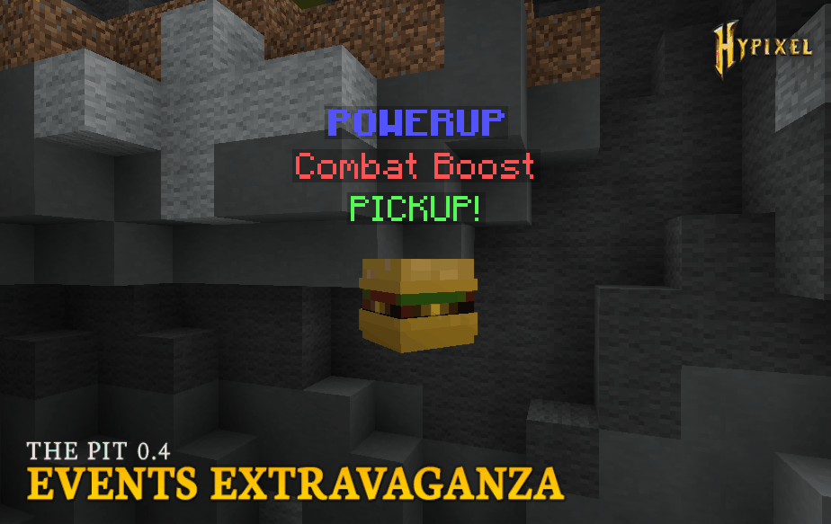

| The Pit 0.4 | |
| The Pit 0.4 - Events Extravaganza | |
|  | |
| Images of events added to the game during this update. | |
| Release Date | Apr 18th, 2019 |
|---|---|
| Forums Approval*Forums approval is based on the number of positive reactions on the update's forum post divided by the number of total reactions. Reactions only count if they were added in the first month of the post being up. | 98.5% |
| Forums Author | Minikloon |
| ← Tiny Bugpatch — Castle Map & Dark Pants → | |
The Pit 0.4 was the eighth major version of the Hypixel Pit. It introduced several new events, event leaderboards, trading, the Cool Conclave renown upgrade, some balance changes, and some bug fixes.
Events added with the update include:
The active event would also be displayed in the bossbar with a timer displaying when the event would start and when the event would end.
A leaderboard was added to the spawn area, allowing players to view the leaderboard for certain event stats, resetting every three months. The leaderboards only displayed players who had joined the Pit in the last 7 days. The selected leaderboard could be changed using the Leaderboard Picker rabbit NPC.
Players who helped contribute to the development of these events through the forums may use the /credit command to be credited in-game when these events occur. These players were also given 200,000 gold for their contribution. A full list of these players may be found here.
The /trade [username] command was also added to the game, allowing players to trade items and gold with each other. A shortcut command, /offer [username] [price (in gold)], was also added, giving the target player 30 seconds to decide whether to trade the user's held item for the gold price listed. Both commands were subject to the following restrictions:
A /tradelimits command was also added, allowing players to view how many trades they had completed and how much gold they could still trade that day.
The Cool Conclave renown upgrade was added, allowing players to use the /cool command. When used, the player is provided with a list of all players in their current lobby who have Prestige IV or higher, in order of highest to lowest prestige. It could be purchased at Prestige X for 10 renown.
Balance changes:
Bug fixes: